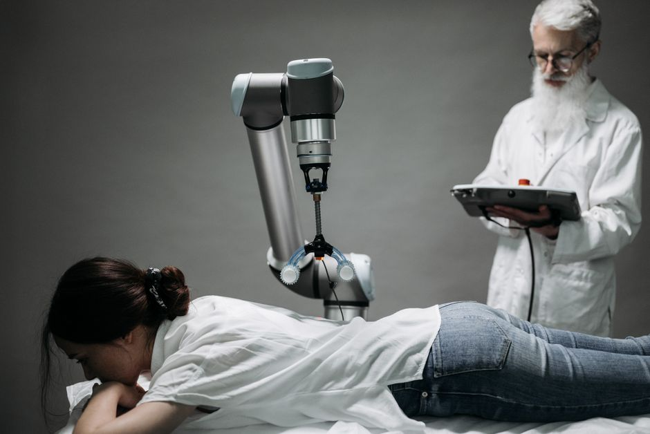

Imagine a world where surgeons perform delicate operations with superhuman precision, where patients recover faster from injuries, and where healthcare becomes more accessible to everyone. This isn't science fiction anymore! Welcome to the incredible realm of medical robotics, a field where cutting-edge engineering meets the noble goal of saving and improving lives. From tiny robots navigating our veins to powerful machines assisting in complex surgeries, robots are transforming healthcare right here in India and across the globe. Let's dive into how these amazing machines are becoming the silent heroes of modern medicine.
The Operating Room Revolution: Surgical Robots
When most people think of robots in medicine, their minds often jump to surgical robots. These aren't autonomous machines performing operations on their own (not yet, anyway!). Instead, they are sophisticated tools that extend a surgeon's capabilities, allowing for procedures that are more precise, less invasive, and often lead to quicker recovery times for patients.
What are Surgical Robots?
Surgical robots are essentially advanced robotic arms controlled by a human surgeon. They act as the surgeon's hands inside the patient's body, translating the surgeon's movements into smaller, more precise actions. This technology minimizes the need for large incisions, reducing pain, scarring, and the risk of infection. Think of it like a highly skilled artist using a super-fine brush for intricate details!
The Da Vinci Surgical System: A Pioneer
The most famous name in surgical robotics is undoubtedly the da Vinci Surgical System. Developed by Intuitive Surgical, it has revolutionized minimally invasive surgery. Here's how it generally works:
- Surgeon Console: The surgeon sits at a console, looking into a high-definition 3D viewer. They use hand and foot controls to manipulate the robotic instruments.
- Patient Cart: This cart holds four robotic arms that are positioned over the patient. One arm holds the 3D camera, while the others hold tiny surgical instruments (like scalpels, scissors, and clamps).
- Vision Cart: This cart contains the computer and camera equipment that powers the system, providing the surgeon with a crystal-clear, magnified view of the surgical site.
The da Vinci system allows surgeons to perform complex procedures, such as prostatectomies, hysterectomies, and cardiac valve repairs, with enhanced dexterity, tremor reduction, and a superior view of the operating area. It's like having microscopic vision and incredibly steady hands!
Beyond Da Vinci: Other Surgical Innovations
While da Vinci is a giant, many other surgical robots are making waves:
- Orthopedic Robots: Systems like MAKO assist in knee and hip replacement surgeries, helping surgeons precisely prepare bone and position implants.
- Neurosurgical Robots: These robots aid in delicate brain and spinal cord surgeries, guiding instruments with incredible accuracy to avoid critical structures.
- Endoscopy Robots: Smaller robots designed to navigate the body's natural openings for diagnostic and minor surgical procedures.
Healing Hands: Rehabilitation and Assistive Robots
Robots aren't just for the operating theatre; they're also playing a crucial role in helping people recover from injuries, manage disabilities, and maintain independence.
Restoring Movement and Independence
Rehabilitation robots are designed to assist patients in regaining motor function after strokes, spinal cord injuries, or other debilitating conditions. They provide repetitive, high-intensity therapy that might be difficult or impossible for human therapists alone.
- Exoskeletons: These wearable robotic suits allow individuals with paralysis or weakness to stand and even walk again. Imagine a robot helping someone take their first steps after years!
- Robotic Prosthetics: Advanced prosthetic limbs can be controlled by muscle signals, offering users a more natural and functional replacement.
- Therapy Robots: Devices that guide a patient's arm or leg through specific exercises, tracking progress and providing feedback.
Assistive Robots in Daily Life
Beyond clinical settings, robots are becoming companions and helpers for the elderly and those with disabilities, promoting greater autonomy.
- Feeding Robots: Robotic arms designed to help individuals with limited arm mobility feed themselves.
- Social and Companion Robots: Robots that can remind patients to take medication, engage in conversation, or alert caregivers in case of a fall.
- Mobility Aids: Advanced robotic wheelchairs or walkers that offer navigation assistance and obstacle avoidance.
"The future of medicine lies in the seamless integration of human expertise and robotic precision, allowing us to achieve what was once deemed impossible."
The Wider World of Medical Robotics
The impact of robotics extends far beyond direct patient interaction, streamlining operations and enhancing safety across healthcare facilities.
Pharmacy and Lab Automation
In hospitals and laboratories, robots are workhorses, handling tasks that require extreme accuracy and speed:
- Medication Dispensing: Robots can precisely count, label, and dispense medications, reducing human error and freeing up pharmacists for more complex tasks.
- Sample Preparation: In labs, robots automate the handling and analysis of patient samples, speeding up diagnostics and research.
Disinfection and Sanitation Robots
Especially after recent global health challenges, robots have become vital in maintaining sterile environments. UV-C light robots can autonomously patrol hospital rooms, operating theatres, and waiting areas, emitting powerful ultraviolet light to kill bacteria and viruses on surfaces. This significantly reduces the risk of healthcare-associated infections.
Telemedicine and Remote Care Robots
Robots are bridging distances, making healthcare more accessible. Telepresence robots allow doctors to "visit" patients in remote areas or conduct specialized consultations without physically being there. This is particularly beneficial in a vast country like India, connecting urban specialists with rural patients.
The Future is Now: What's Next for Healthcare Automation?
The field of medical robotics is constantly evolving, driven by advancements in AI, materials science, and miniaturization.
Artificial Intelligence and Machine Learning
AI is the brain behind many future robotic innovations. It will help robots:
- Diagnose Diseases: By analyzing vast amounts of medical data and images.
- Predict Outcomes: Helping doctors make better treatment plans.
- Optimize Robot Movements: Making surgical and rehabilitation robots even more adaptive and precise.
Miniaturization and Swarm Robotics
Imagine tiny robots, no bigger than a grain of rice, that can travel through your bloodstream to deliver drugs directly to cancer cells, or perform microscopic repairs. This concept of nano-robotics and swarm robotics (where many tiny robots work together) holds incredible promise for targeted therapies and diagnostics.
Ethical Considerations and Human Touch
While robots bring immense benefits, it's crucial to remember that they are tools. Ethical discussions around data privacy, job displacement, and the importance of the human element in care are ongoing. Robots are meant to assist and augment, not replace, the compassion and critical thinking of human doctors and nurses.
Get Involved: Your Role in the Robotics Revolution
The world of medical robotics is a fantastic blend of engineering, computer science, biology, and medicine. It's a field hungry for young, curious minds! If you're interested in making a real difference in people's lives through technology, this is an area to explore.
You might wonder how coding fits into all this. Well, every robot, no matter how advanced, needs instructions. Here's a tiny glimpse of what a robot's "brain" might be doing:
# Simple pseudocode for a medical assistant robot checking patient vitals
# This is how a robot might be programmed to gather and analyze data.
def check_patient_vitals(patient_id):
print(f"Robot accessing patient {patient_id}'s digital records...")
# Simulate reading data from attached sensors
heart_rate = read_sensor("heart_rate") # e.g., 72 bpm
temperature = read_sensor("temperature") # e.g., 36.8 °C
blood_pressure_systolic = read_sensor("blood_pressure_systolic") # e.g., 120 mmHg
blood_pressure_diastolic = read_sensor("blood_pressure_diastolic") # e.g., 80 mmHg
print(f"\n--- Patient {patient_id} Vitals Report ---")
print(f" Heart Rate: {heart_rate} bpm")
print(f" Body Temperature: {temperature}°C")
print(f" Blood Pressure: {blood_pressure_systolic}/{blood_pressure_diastolic} mmHg")
# Basic logic to identify potential issues
if heart_rate > 100 or temperature > 38.5 or blood_pressure_systolic > 140:
print("\n ALERT: Vitals indicate a potential concern. Notifying medical staff immediately.")
send_alert_to_nurse(patient_id, "Abnormal vitals detected")
else:
print("\n Vitals are stable and within normal parameters.")
log_vitals_to_database(patient_id, heart_rate, temperature, blood_pressure_systolic, blood_pressure_diastolic)
# Helper function (would be implemented with actual sensor hardware)
def read_sensor(sensor_type):
# In a real robot, this would interface with hardware
if sensor_type == "heart_rate": return 75
if sensor_type == "temperature": return 37.0
if sensor_type == "blood_pressure_systolic": return 125
if sensor_type == "blood_pressure_diastolic": return 82
return None
# Helper function (would send actual notifications)
def send_alert_to_nurse(patient, message):
print(f" [SYSTEM] Notification sent to Nurse for Patient {patient}: {message}")
# Helper function (would interact with a real database)
def log_vitals_to_database(patient, hr, temp, bps, bpd):
print(f" [SYSTEM] Vitals logged for Patient {patient}.")
# Example of calling the function for a patient
# check_patient_vitals("MW-P-007")
Conclusion
Medical robotics is a field brimming with innovation, offering solutions to some of humanity's greatest health challenges. From increasing surgical precision with systems like da Vinci to empowering patients with rehabilitation robots and automating critical hospital functions, these machines are making healthcare safer, more efficient, and more accessible. For students in India, exploring STEM fields like robotics, coding, and engineering isn't just about building cool gadgets; it's about shaping a future where technology and compassion work hand-in-hand to heal the world. At MakerWorks, we believe you have the power to be part of this incredible revolution. Start building, start coding, and start imagining the future of medicine!
Ready to explore the world of robotics? Join MakerWorks today and turn your curiosity into creation!